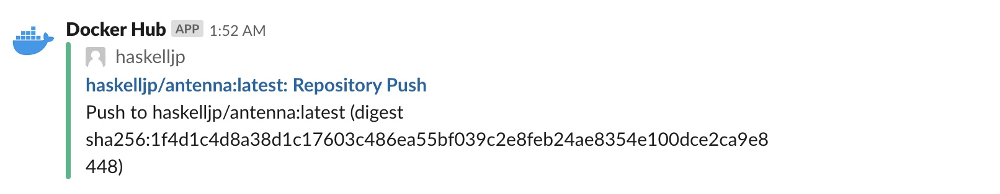

Haskell-jpのコンテンツの一つとしてHaskell Antennaという Web ページの開発・運用をしております。

このWebページはHaskell-jpのリポジトリで開発し、GitHub Pagesとして公開しています。 更新はTravisCIのDaily Cronを使って行なっていましたが、なんとかして 毎時更新を実現したい と思案していました。 ひょんなことからDrone CloudというCIサービスを見つけ、このサービスではHourly Cronが可能だったので試しに更新の部分だけ移行してみました。 という話です。
ちなみに、本稿は全くHaskellのコードが出て来ません ;)
Link to
hereDrone.io
Drone Cloudはパブリックリポジトリであれば無料で利用できるCIサービスです。 内部ではDroneというOSSのCIプラットフォームを利用しています。 Droneは以下のような特徴を持っています:
- JenkinsのようなOSSである(Go言語製)
- TravisCIやCircleCIのようなパイプラインによる設定を行う(YAML形式)
- Dockerとの親和性が高くk8sなどでの動作もサポートしている
- Pluginシステムによって外部サービスとの連携が可能
OSSのためお好みのクラウドサービスなどで自前運用も可能ですし、Drone Enterpriseという有料のクラウドサービスも提供しています。
Link to
here毎時更新を実現するために
単純にDroneの設定ファイルを記述するだけではなく、次のような作業を行いました:
- Haskell AntennaのDockerイメージ化
- AntennaのDockerイメージを自動更新
- Drone Cloudの設定
- Personal TokenからDeploy Keyに移行
- Slackの通知回りを整理
順に説明していきましょう。
Link to
hereAntennaのDockerイメージ化
Drone Cloudでは無償でキャッシュを利用することができません1。 Haskell(というかStack)のCIをしている方ならわかると思いますが、キャッシュなしにビルドするとすごい時間がかかります。 なので、Haskell Antennaの静的ページの生成を行う antenna コマンドをDockerイメージとしておき、Drone内ではこのイメージを利用して静的ページの生成を行う方針でいきます。
もちろんDockerイメージの生成には、StackのDockerインテグレーションを使います。 以下のような設定をstack.yamlに追記し:
# stack.yaml
docker:
repo: fpco/stack-build
enable: false
image:
container:
name: antenna
base: fpco/ubuntu-with-libgmp次のようなコマンドを実行するだけでantennaというDockerイメージが生成されます:
stack docker pull
stack --docker image containerDocker Hubにhaskelljp/antennaというネームスペースを確保した2のでここにプッシュしました:
docker tag antenna haskelljp/antenna
docker push haskelljp/antennaちなみに、haskell-jp ではなく haskelljp なのは、Docker Hubの組織アカウント名には - が使えなかったからです。
Link to
hereDockerイメージの自動更新
Docker HubにはAutomated buildsと呼ばれるGitHubなどのプッシュによって行う自動ビルドがありますが、StackのDocker Integrationを使うと、その機能を利用することができません。 そこで、TravisCIを使って自動ビルドすることにしました。 この辺りは「Stack の Docker Integration とイメージの自動更新 - ひげメモ」で記事にしてあるので、細かい話は割愛します。
今回は次のような設定をして、master ブランチにプッシュがあった時にのみDocker Hubにプッシュします:
# .travis.yml
# ...
install:
- mkdir -p ~/.local/bin
- export PATH=$HOME/.local/bin:$PATH
- travis_retry curl -L https://www.stackage.org/stack/linux-x86_64 | tar xz --wildcards --strip-components=1 -C ~/.local/bin '*/stack'
- stack docker pull
jobs:
include:
- stage: build dependencies
script: stack --no-terminal --docker --install-ghc test --bench --only-dependencies
- stage: build antenna
script: stack --no-terminal --docker build --bench --no-run-benchmarks --no-haddock-deps --pedantic
- stage: push docker image
if: branch = master AND type = push
script:
- stack --docker image container
- docker tag antenna haskelljp/antenna
- echo "$DOCKER_PASSWORD" | docker login -u "$DOCKER_USERNAME" --password-stdin
- docker push haskelljp/antennaDockerでHaskellのビルドもするために毎回Docker Pullが走るようになり少し遅くなったのが辛いですね(今後要検討)。
Link to
hereDrone Cloudの設定
いよいよDroneによる antenna コマンドの実行を設定します。 元々は TravisCI でこんな感じでした:
jobs:
include:
- stage: install anttena
script: stack --no-terminal install
- stage: exec antenna
script: git clone -b gh-pages "https://${GH_TOKEN}@github.com/${TRAVIS_REPO_SLUG}.git" temp
if: branch = master AND type IN (push, cron)
after_success:
- cp sites.yaml temp/sites.yaml
- cp -r image/* temp/image
- cd temp
- stack exec -- antenna sites.yaml
- git config user.name "${GIT_NAME}"
- git status
- git add -A
- git diff --quiet && git diff --staged --quiet || git commit -am "[skip ci] Update planet haskell. See https://haskell.jp/antenna/ for new entries!"
- git push origin gh-pagesstack install で antenna コマンドの実行ファイルを生成し(これはキャッシュされるので早い)、gh-pages ブランチへページの更新をプッシュするためにGitHubのPersonal Tokenを使って再度クローンしていました。 更新の有無は git diff を使って確認しています。
まずはこれをこのままDroneに移植します:
# .drone.yml
kind: pipeline
name: default
steps:
- name: exec antenna
image: matsubara0507/antenna
environment:
GH_TOKEN:
from_secret: github_api_token
GIT_NAME: BOT
commands:
- git clone -b gh-pages "https://${GH_TOKEN}@github.com/haskell-jp/antenna.git" temp
- cp sites.yaml temp/sites.yaml
- cp -r image/* temp/image
- cd temp
- antenna sites.yaml
- git config user.name "${GIT_NAME}"
- git status
- git add -A
- git diff --quiet && git diff --staged --quiet || git commit -am "[skip ci] Update planet haskell. See https://haskell.jp/antenna/ for new entries!"
- git push origin gh-pages
when:
branch:
- master
event:
exclude:
- pull_request記法は違うもののそのまま移植ができました。 条件(ifやwhen)のところですが、Droneでcronのイベントを指定する方法がわからなかったので、動作しては困るpull_requestだけ弾くようにしました。
Cronの設定はWeb UI上で行います:

これで毎時間masterブランチのビルドが実行されます。
Link to
herePersonal TokenからDeploy Keyに移行
Personal Tokenは他の個人のリポジトリも操作できてしまうので、兼ねてからできれば使いたくないなと思っていました(特に個人プロジェクトじゃないHaskell-jpのプロジェクトでは)。 なので、これを機にリポジトリ固有のDeploy Keyに移行しました。
CircleCIのような書き込み用のSSH Keyを登録する機能はDroneにはありません。 代わりに次のように書くと良いです:
steps:
- name: clone gh-pages
image: docker:git
environment:
SSH_KEY:
from_secret: deploy_key
commands:
- mkdir /root/.ssh && echo "$SSH_KEY" > /root/.ssh/id_rsa && chmod 0600 /root/.ssh/id_rsa
- echo -e "Host github.com\n\tStrictHostKeyChecking no\n" > /root/.ssh/config
- git clone -b gh-pages git@github.com:haskell-jp/antenna.git tempSecretというのはDrone側で保持・秘匿できる環境変数のような機能です(名前が違うだけでだいたいどのCIプラットフォームにもありますね)。 今回はせっかくなので、これをDrone Pluginとして自作した3、matsubara0507/git-with-ssh というのを使います:
# .drone.yml
kind: pipeline
name: default
steps:
- name: clone gh-pages
image: matsubara0507/git-with-ssh
settings:
ssh_private_key:
from_secret: deploy_key
ssh_hosts:
- github.com
commands:
- git clone -b gh-pages git@github.com:haskell-jp/antenna.git temp
when:
branch:
- master
event:
exclude:
- pull_request
- name: exec antenna
image: haskelljp/antenna
commands:
- mkdir -p temp
- cp sites.yaml temp/sites.yaml
- cp -r image/* temp/image
- cd temp
- antenna sites.yaml
- name: push gh-pages
image: matsubara0507/git-with-ssh
settings:
ssh_private_key:
from_secret: deploy_key
ssh_hosts:
- github.com
commands:
- cd temp && git config user.name BOT
- cd temp && git config user.email bot@example.com
- cd temp && git status
- cd temp && git add -A
- cd temp && git diff --quiet && git diff --staged --quiet || git commit -am "[skip ci] Update planet haskell. See https://haskell.jp/antenna/ for new entries!"
- cd temp && git push origin gh-pages
when:
branch:
- master
event:
exclude:
- pull_requestcd temp && というのがダサいですが、そこはおいおい直します(git-with-ssh の方を)。
Link to
hereSlackの通知回りを整理
元々はHaskell-jpの #antenna チャンネルにGitHubの通知設定をしているだけでした。 今回の開発中、ずっとコミットの通知などが来てうるさかったので次のように分けました:
#antennaチャンネルはgh-pagesブランチのコミットだけ通知- ついでにHaskell AntennaのRSSを設定した
#antenna-devチャンネルを新しく作りGitHubの全ての更新はこっちに設定#dockerhubチャンネルもついでに作ってhaskelljpの更新を通知する
最近、Docker Hubの大リニューアルがあって、いつのまにかDocker HubとSlackを連携できるようになっていました。 なので試しに連携して更新の通知が飛ぶようにしてみました:

Link to
here今後やりたいこと
いくつかあります:
- LTSの更新(最新GHCがWindowsでも動作したらかな)
- Feedの改善
- SlackのRSSでもちゃんと更新が通知されるように
- ないしは更新差分の通知
- Haskell-jp SlackのAppが満杯なので厳しいかも
あと、QiitaのFeedがコメントや追記などでも更新され、その通知が #antenna チャンネルに飛んで来てうるさいので修正したいです4。
キャッシュの導入の仕方は記事にしたので興味のある方は是非「GCS で Drone 1.0 をキャッシュする - ひげメモ」↩
もしDocker Hubのhaskelljp組織アカウントのメンバーになりたい場合はHaskell-jp Slackで声をかけてください(チャンネルはどこでも良いですよ)。↩
この話も記事にしておきました「Drone Plugin を作ってみた: git-with-ssh - ひげメモ」↩
この修正は
haskell-jp/antennaではなく、matsubara0507/scrapbookからやる必要があります。↩